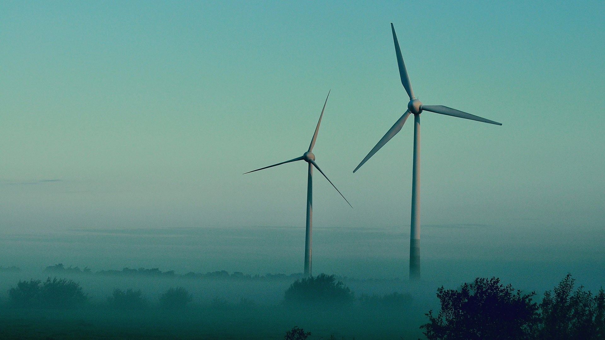
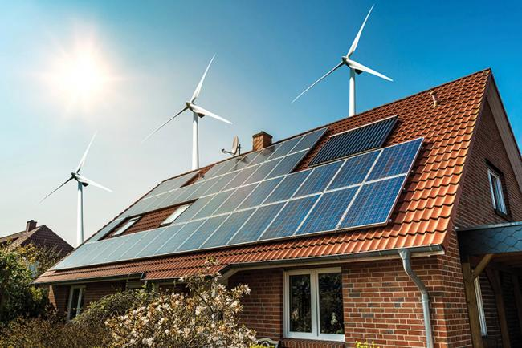
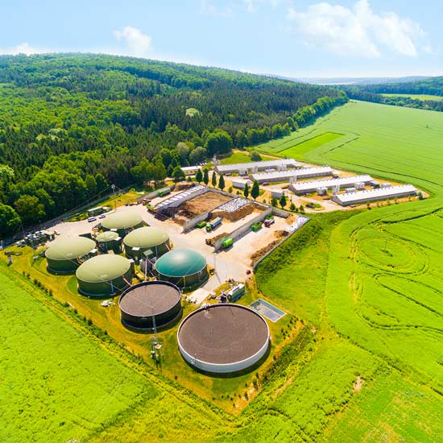
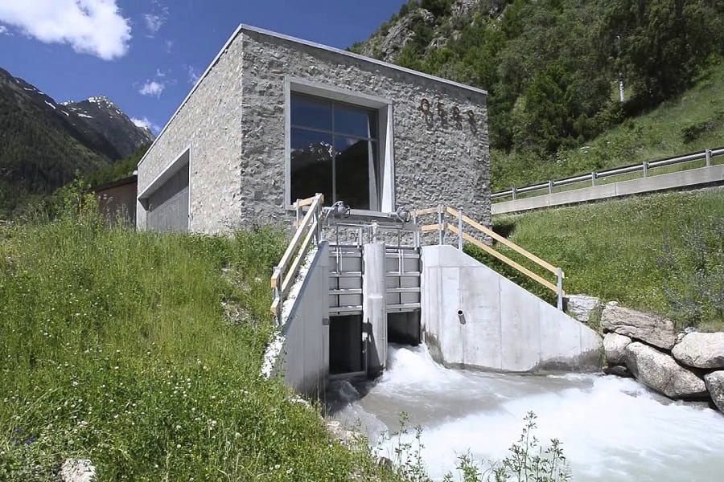

“A transition to clean energy is about making an investment in our future”
VARIOUS SOURCES OF RENEWABLE ENERGY
WIND ENERGY
Wind turbines are not just for the big wind farms you see in wide open spaces. Smaller wind turbines are available for homes, either as a free-standing pole or installed on the building directly. They generate electricity by the wind turning the blades, which drives the internal turbine and creates power.

SOLAR ENERGY
You can use the sun to generate electricity for your home through solar photovoltaic panels that are installed on your roof. These panels take the sun's rays and convert it into electricity that you can use to warm your home and power your devices.

BIO MASS ENERGY
Biomass heating systems burn organic materials, such as wood pellets, chips or logs to provide heating and hot water. This is a lower carbon way of heating compared to fossil fuels like coal and oil as the wood burned in these systems only emits as much carbon as the tree absorbed during the months and years that it was growing. What’s more, it's estimated that a biomass system can save you up to £700 a year compared to an old electric heating system.

HYDRO ENERGY
This renewable energy source uses water flowing downhill to generate electricity - so if your home is close to a lake or river it could be a great option for you. There are many large scale hydroelectric power plants in operation but you can also get small scale ones for your home. These can generate enough electricity to power a home on a river that has a one-meter drop.

AIR SOURCE HEAT PUMPS
An air source heat pump is a renewable energy system that uses the heat from the outside air to provide you with heating and hot water – working in a similar way to a fridge but in reverse.
This clean and environmentally-friendly source of heating is virtually silent when operating and can save you up to £360 a year on your heating bill compared to an oil-fired system.